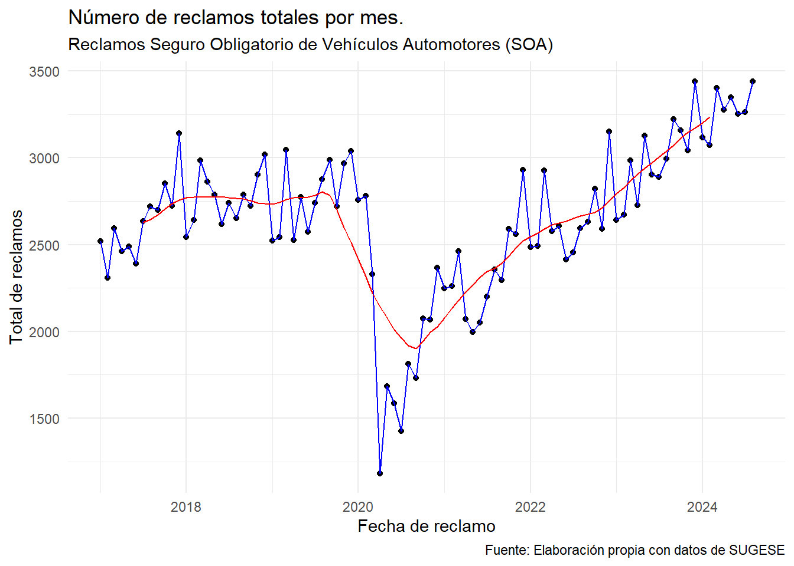
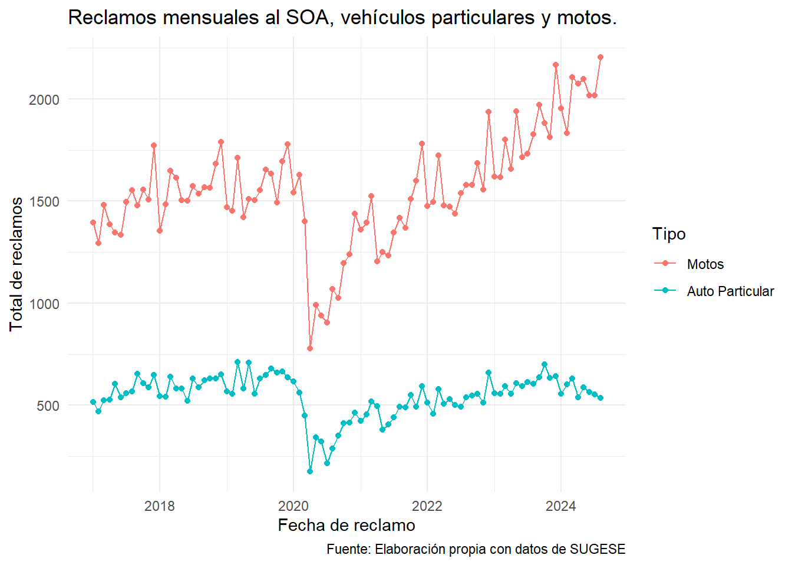
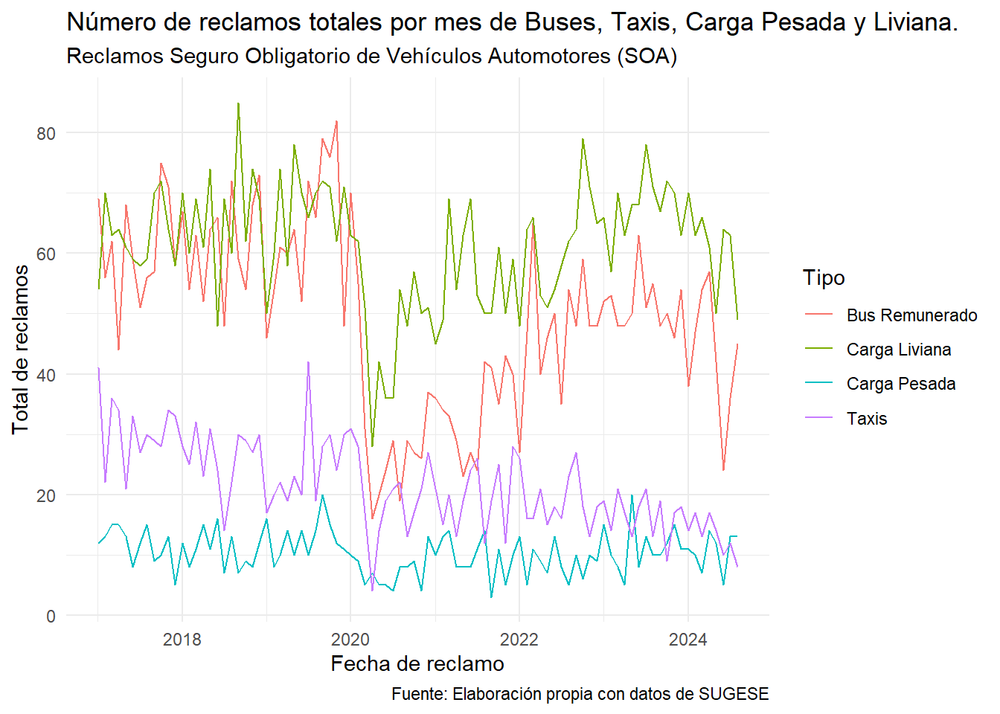
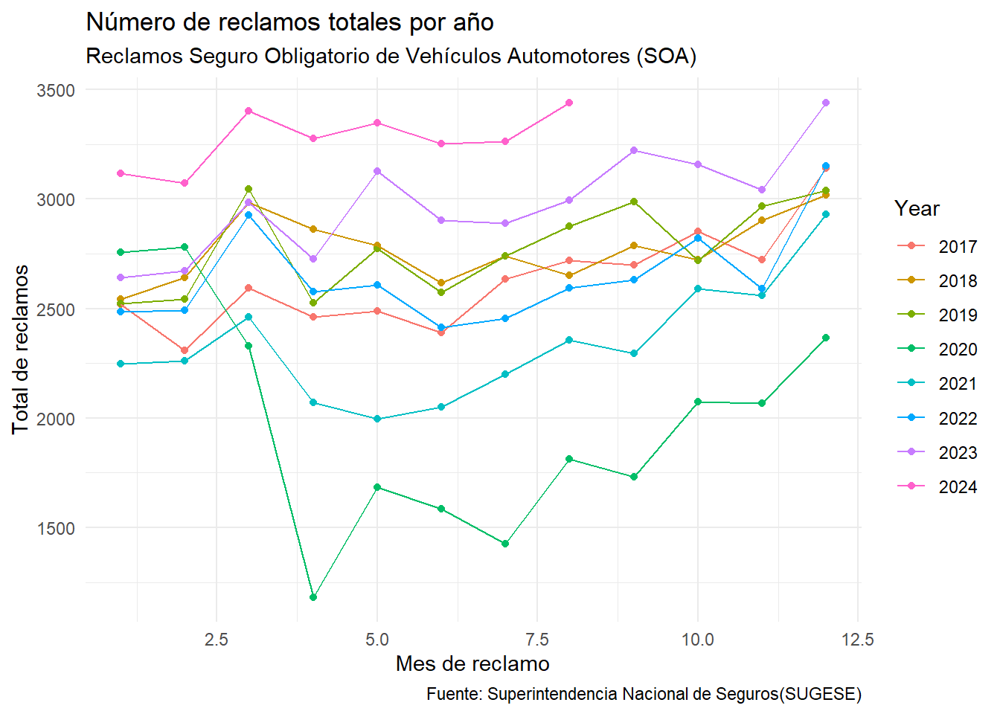

library(tidyverse)
library(knitr)
library(readr)
library(readxl)
library(lubridate)
library(dplyr)
library(TTR)
library(openxlsx)
library(nortest)
library(readxl)
library(xtable)
library(fitdistrplus)3 Bitácora 2
3.1 Análisis estadísticos
3.1.1 Tabla 1: Datos por tipo de vehículo
| Fecha | Particular | Carga Liviana | Carga Pesada | Motos | Taxis | Equipo Especial |
|---|---|---|---|---|---|---|
| 01/01/2017 | 516.00 | 54.00 | 12.00 | 1394.00 | 41.00 | 1.00 |
| 01/02/2017 | 471.00 | 70.00 | 13.00 | 1294.00 | 22.00 | 1.00 |
| 01/03/2017 | 525.00 | 63.00 | 15.00 | 1481.00 | 36.00 | 2.00 |
| 01/04/2017 | 526.00 | 64.00 | 15.00 | 1385.00 | 34.00 | 0.00 |
| 01/05/2017 | 604.00 | 61.00 | 13.00 | 1345.00 | 21.00 | 1.00 |
| 01/06/2017 | 539.00 | 59.00 | 8.00 | 1335.00 | 33.00 | 0.00 |
3.1.2 Tabla 2: Datos adicionales
| Equipo Especial | Autobuses remunerado | Autobuses uso particular | Bicimotos, cuadraciclos y UTV | No identificado | Total |
|---|---|---|---|---|---|
| 1.00 | 69.00 | 0.00 | 0.00 | 431.00 | 2518.00 |
| 1.00 | 56.00 | 0.00 | 0.00 | 383.00 | 2310.00 |
| 2.00 | 62.00 | 0.00 | 0.00 | 411.00 | 2595.00 |
| 0.00 | 44.00 | 0.00 | 0.00 | 392.00 | 2460.00 |
| 1.00 | 68.00 | 0.00 | 0.00 | 374.00 | 2487.00 |
| 0.00 | 59.00 | 0.00 | 0.00 | 356.00 | 2389.00 |
3.2 Análisis descriptivo
Para poder cumplir con los objetivos del proyecto es necesario hacer un análisis completo de los datos. Primeramente es vital presentar los siguientes cuadros de estadísticos y dispersión para notar como se han comportado los datos. Para fortalecer el análisis, a continuación se presentan los siguientes gráficos: ### Gráfico 1: Número total de reclamos por mes
reclamos <- read_excel("Reporte_Siniestralidad_SOA.xlsx", sheet = "Accidentes")
reclamos$Fechas <- seq(as.Date("2017-01-01"), as.Date("2024-08-01"), by = "month")
anos <- c(rep(2017, 12), rep(2018, 12), rep(2019, 12), rep(2020, 12),
rep(2021, 12), rep(2022, 12), rep(2023, 12), rep(2024, 8))
Mes2 <- c(rep(1:12, 8))
Mes <- Mes2[1:(length(Mes2) - 4)]
reclamos$Year <- anos
reclamos$Mes <- Mes
#Los valores mensuales permiten ver estacionalidad y los anuales tendencia.
reclamoss <- head(reclamos)
reclamos2 <- reclamoss[,1:7]
reclamos3 <- reclamoss[,7:15]
ggplot(reclamos)+geom_point(aes(x=Fecha, y=Total))+geom_line(aes(x=Fecha, y=Total), color="blue")+geom_line(aes(x=Fecha, y=decompose(ts(Total, start = c(2015, 1), frequency = 12), type="multiplicative")$trend), colour = "red")+labs(title="Número de reclamos totales por mes.",subtitle = "Reclamos Seguro Obligatorio de Vehículos Automotores (SOA)",caption = "Fuente: Elaboración propia con datos de SUGESE")+
xlab("Fecha de reclamo")+
ylab("Total de reclamos") + theme_minimal()
El primer gráfico se puede visualizar el número de reclamos totales por mes para el periodo en estudio. Para el periodo de 2017 a principios 2020 se puede notar un comportamiento estable donde los totales rondan a los 2750 reclamos. Posteriormente, por el efecto del COVID-19 y las restricciones de circulación, los reclamos caen a menos de 1000. Para finales del 2020 se nota un crecimiento gradual de los reclamos hasta llegar a niveles prepandémicos para principios del 2022. A partir del 2022 se nota un mayor crecimiento (representando la mayor cantidad de reclamos mensuales para este periodo) para llegar al número más alto en el mes de agosto de 2024.
3.2.1 Gráfico 2: Comparación de reclamos por tipo de vehículo
ggplot(
pivot_longer(
dplyr::select(reclamos, Motos, Particular, Fecha),
cols = c("Particular", "Motos"),
names_to = "Tipo",
values_to = "Reclamos"
),
aes(x = Fecha, y = Reclamos, colour = Tipo)
) +
geom_line() +
geom_point() +
labs(
title = "Reclamos mensuales al SOA, vehículos particulares y motos.",
caption = "Fuente: Elaboración propia con datos de SUGESE"
) +
xlab("Fecha de reclamo") +
ylab("Total de reclamos") +
theme(legend.position = "bottom") +
scale_color_hue(labels = c("Motos", "Auto Particular")) +
theme(
legend.background = element_rect(fill = "lightblue", colour = 1),
legend.title = element_text(
family = "Roboto",
color = "blue",
size = 10,
face = 2
)
)+ theme_minimal()
Para esclarecer el análisis es necesario notar la diferencia entre los automotores más numerosos según su tipo: vehículo particular y motocicleta. Se evidencia una mayor cantidad total de reclamos para las motocicletas, en contraste con los vehículos particular. La razón de tal distinción es por el alto riesgo que significa manejar en motocicleta (mayor exposición física, menor estabilidad si sucede algún imprevisto en carretera).
3.2.2 Gráfico 3: Comparación de reclamos por tipo de vehículo
ggplot(
pivot_longer(
dplyr::select(reclamos, Fecha, Taxis, Carga_Liviana, Carga_Pesada, Bus_remunerado),
cols = c("Taxis", "Carga_Liviana", "Carga_Pesada","Bus_remunerado"),
names_to = "Tipo",
values_to = "Reclamos"
),
aes(x = Fecha, y = Reclamos, colour = Tipo)
) +
geom_line() +
labs(
title = "Número de reclamos totales por mes de Buses, Taxis, Carga Pesada y Liviana.",
subtitle = "Reclamos Seguro Obligatorio de Vehículos Automotores (SOA)",
caption = "Fuente: Elaboración propia con datos de SUGESE"
) +
xlab("Fecha de reclamo") +
ylab("Total de reclamos") +
theme(legend.position = "bottom") +
scale_color_hue(labels = c("Bus Remunerado", "Carga Liviana", "Carga Pesada", "Taxis")) +
theme(
legend.background = element_rect(fill = "lightblue", colour = 1),
legend.title = element_text(
family = "Roboto",
color = "blue",
size = 10,
face = 2
)
)+ theme_minimal()
Por otro lado, los otros tipos de vehículos presentan una cantidad de reclamos menor y más uniforme entre ellos. Por tal razón es mejor agruparlos aparte de las motos y los particulares. El vehículo de carga liviana presenta mayor cantidad de reclamos mientras que carga pesada la menor cantidad. Esto se puede atribuir a que, generalmente, los conductores de carga pesada deben de tener mayor habilidad conductora para manejar tales vehículos automotores.
3.2.3 Gráfico 3: Tasa de cambio mensual en los reclamos
ggplot(mutate(reclamos, Year = as.character(Year))) +
geom_line(aes(
x = as.factor(Mes),
y = (Total - lag(Total)) / lag(Total),
color = Year,
group=Year
), size = 3) +
facet_wrap(~Year, ncol = 4)+
labs(title = "Tasa de cambio mensual de reclamos al SOA",
caption = "Fuente: Elaboración propia con datos de SUGESE.") +
xlab("Mes de reclamo") +
# scale_x_discrete(
# labels = c(
# "Enero",
# "Febrero",
# "Marzo",
# "Abril",
# "Mayo",
# "Junio",
# "Julio",
# "Agosto",
# "Setiembre",
# "Octubre",
# "Noviembre",
# "\ \ Diciembre"
# )
# ) +
ylab("Tasa de cambio") +
cowplot::theme_minimal_hgrid()+
theme(legend.position = "none")
En esta figura se muestran la tasas de cambio mensual en el numero de reclamos al SOA. Para el mes de enero, en todos los años, se visualizan tasas levemente menores. Por otro lado, se distinguen comportamientos atípicos para el mes de abril de 2020 (la tasa de cambio más baja) y para mayo de 2020 (la tasa de cambio más alta). Para el resto de meses se tiene un comportamiento homogéneo.
3.2.4 Gráfico 4: Número de reclamos por año
ggplot(mutate(reclamos, Year = as.character(Year), Mes = as.integer(Mes) ))+geom_point(aes(x=Mes, y=Total, color=Year))+
geom_line(aes(x=Mes, y=Total, color=Year))+labs(title="Número de reclamos totales por año",
subtitle = "Reclamos Seguro Obligatorio de Vehículos Automotores (SOA)",
caption = "Fuente: Superintendencia Nacional de Seguros(SUGESE)")+
xlab("Mes de reclamo") +
ylab("Total de reclamos")+theme(legend.position="bottom") + theme_minimal()
También, es importante visualizar el número de reclamos por año dentro del periodo en estudio. Para el presente año 2024 se tiene una mayor cantidad de reclamos. La cantidad de vehículos particulares registrados año con año va en un aumento considerable, al existir mayor cantidad de vehículos transitando, hay mayor cantidad de accidentes cubiertos por el seguro obligatorio automotor. Es decir, el aumento del parque vehicular tiene una relación directa en la cantidad de reclamos.
3.3 Propuesta metodológica
3.3.1 Pruebas de bondad de ajuste
Las pruebas de bondad de ajuste son herramientas estadísticas que evalúan si una variable aleatoria sigue una distribución específica D’Agostino y Stephens (1986). Se destacan las pruebas utilizadas en este estudio:
3.3.1.1 Prueba chi-cuadrado de Pearson-Fisher
La prueba chi-cuadrado de Pearson-Fisher Fisher (1922), mejora la prueba de Pearson al permitir la selección del mejor valor \(\theta\) para la hipótesis nula y definir una partición óptima del espacio muestral \(\mathcal{X}\). Esta adaptación considera una muestra aleatoria \(X_1, X_2, \dots, X_n\) y compara la distribución observada con una distribución teórica dentro de una familia parametrizada \(\mathcal{F}\). El estadístico de prueba chi-cuadrado de Pearson-Fisher se define como:
\[ Q_n^{FP}= \sum_{j=1}^m \frac{(N_j - n p_j(\hat{\theta}(X)))^2}{n p_j(\hat{\theta}(X))} \]
donde \(\hat{\theta}(X)\) es el estimador de máxima verosimilitud ajustado para datos agrupados.
3.3.1.2 Prueba de Kolmogorov-Smirnov
Según DeGroot (2002), la prueba de Kolmogorov-Smirnov se utiliza para determinar si dos conjuntos de datos tienen la misma distribución, esto mediante la comparación de la función de distribución acumulada empírica de los datos muéstrales con respecto a la distribución esperada, con lo cual se define una Hipótesis nula \([H_0: f(X)= f^*(x)]\) y la hipótesis alternativa \([H_1: f(X) \neq f^*(x)]\) con \(f(x)\) la función de distribución desconocida asociada a un conjunto de observaciones \(X_1, X_2, ..., X_n\) y \(f^*(x)\) es la función de distribución desconocida asociada a un conjunto observaciones \(Y_1,Y_2, ...,Y_m\).
Con \(f_n(x)\) la función de distribución calculada a partir de los valores \(X_1, ..., X_n\) y $f_m^*(x) $ la función de distribución calculada a partir de los valores de \(Y_1, ...,Y_m\). de esta manera se define el estadístico \(D_{nm}\) que representa la máxima diferencia entre la función de distribución acumulada (c.d.f) de la muestra observada y la teórica:
\[ D_{nm} = \sup_{x \in R} \lvert f_n(x) - f_m^*(x) \rvert \]
Si \((D_{nm} \to 0)\) cuando \((n, m \to \infty)\), entonces \((H_0)\) es verdadera. - Hipótesis nula: \((H_0: f(X) = f^*(x))\) - Hipótesis alternativa: \((H_1: f(X) \neq f^*(x))\)
D’Agostino, R. B., y M. A. Stephens. 1986. Goodness-of-Fit Techniques. Marcel Dekker, Inc.
DeGroot, M., M. y Schervish. 2002. Probability and Statistics. Vol. 2. Pearson Education, Inc.
Fisher, R. A. 1922. «On the interpretation of \(\chi^2\) from contingency tables, and the calculation of P». Journal of the Royal Statistical Society 85 (1): 87-94.